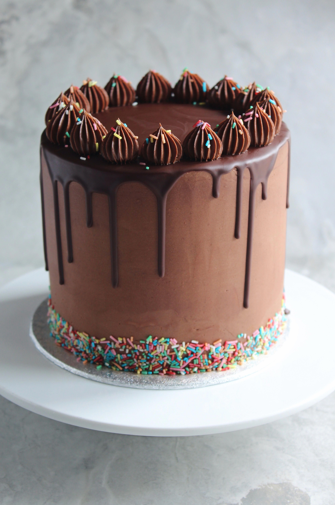

Discover More Chocolate Cake
Discover More
Introduction Ingredients Sters
Chocolate cake is a rich, moist dessert made with cocoa powder, flour, eggs, butter, and sugar. it`s perfect for any occasion, especially for chocolate lovers!
Discover More
© 2024 Chocolate Cake Recipes